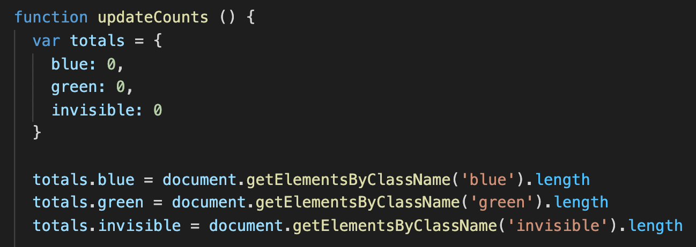
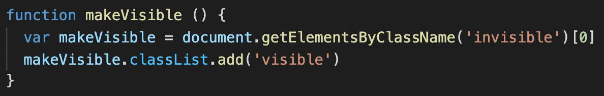

Introduction to JavaScript.
HTML and CSS have a funny relationship. What looks like codependency is actually a little one sided. Together these two are magic – content and style can make really beautiful things. While a little bland on her own, HTML can still talk-the-talk, showing off the words and images in her brain in a linear fashion. CSS is another story though. She has an infinitely stylish and ever-growing wardrobe, but can barely speak a sensical word out loud without her partner in crime.
This dynamic becomes further complex (albeit a little exciting) when a third enters the relationship. Let’s call her… JavaScript. She has a way with words, and can manipulate HTML and CSS to do exactly what she wants. JavaScript gets right into the minds of HTML and CSS, pushing and pulling at the very nodes that make them up.
None of this can be done without the DOM though, thankfully not a fourth entity in this relationship, but a God’s eye view of all the nodes as they come together to form a website. It houses the HTML, CSS and JavaScript that make up a webpage. In doing so it allows JavaScript to access and modify the HTML and CSS within this map. Using the Document view it can break down HTML and CSS into much smaller elements and modify or interact with them. Using an even broader Window view the DOM provides JavaScript editable information about the URL bar, scroll bars, browser/downloads access, user actions and more.
Control flow is the concept used to define the way JavaScript is read and actioned. Generally speaking, this could be done in a linear fashion, but more often than not the linearity of this process is interrupted by other elements which create forks in the road or cycles that must be completed before moving ahead. Loops are one example of these cycles. A Loop is a function in javascript that will repeat till a specific element is considered true. Imagine, for example, that you’re cooking dinner. This overall process is your Control Flow. We know that all good meals start with a few onions frying in the pan, so you begin to dice onion. This action is your loop, and you will not continue with the other elements of food preparation till it is considered true that enough onion has been diced.
In JavaScript, both Objects and Arrays are blocks of code that can store collections of data (as opposed to singular pieces of information). Both objects and arrays store their data differently, and as such there are different means to access said data. Objects contain both a Key and a Value property. Due to that complexity, properties of an object are accessed using dot or square bracket notation containing a written reference to the properties you are accessing. Arrays on the other hand contain data in a list format, and fitting with that are accessed more simply, by indicating the property with a number in square brackets, the number will guide you to the relative item in that list.
 Accessing an object using dot notation with a written refernece.
 Accessing an array using square bracket & numeric notation.
A Function is an object within JavaScript that is designed to perform a specific task and return a result. Functions can be loaded up with their own function specific variables which define the information used to execute the function. They are particularly useful because with the right formatting they can execute really complex tasks using minimal code, further to that they can be used multiple times with unique variables applied to each iteration of the function.